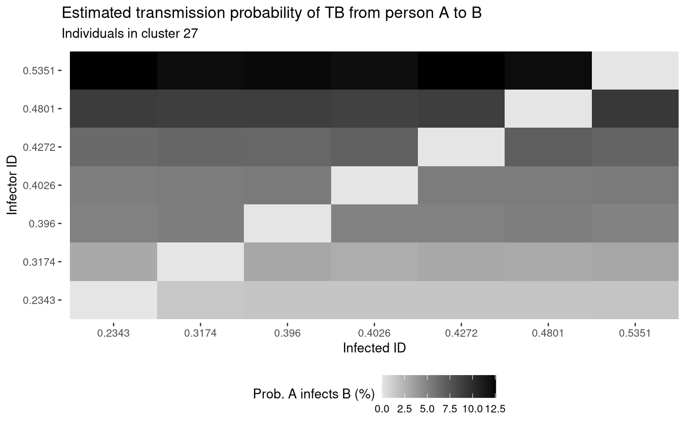

vignettes/not-built-vignettes/tb-data-vis.Rmd
tb-data-vis.RmdRecap our model fitting results from the TB data
We will visualize the best model in the data by
Sample new clusters from our best model
We have run the code (but do not show) that was used to fit our base model to the TB data. For more details see the data results section.
We can approximate the probability that individual an individuals with probability \(p_A\) of infecting an individual with probability \(p_B\). We provide the function mc_trees_to_A_infects_B which calculates this probability for you for a given cluster. We look at cluster 27. For this exercise, we sample a new set of MC trees than what was used to fit the model.
par_ests <- c("Intercept" = -.72690792, "smear" = -.09322607, "hiv_neg_pos" = -0.36415841, "hiv_unk_pos" = -0.56817810, "rel_time" = .345552628) mc_trees <- sample_mc_trees(clusters %>% filter(cluster_id == 27), B = 10000, multiple_outside_transmissions = FALSE, covariate_names = names(par_ests))
plotting_df <- mc_trees_to_A_infects_B(my_id = 27, par_ests = par_ests, mc_trees = mc_trees, output = "tidy")
We can then plot the associations, for example, with a heat map. The output of mc_trees_to_A_infects_B() is a long data frame of probability that \(A\) infected \(B\), which is estimated over the MC samples.
ggplot(data = plotting_df) + geom_tile(aes(y = factor(infector_id), x = factor(infected_id), fill = prob * 100)) + theme_bw(base_size = 10) + labs(title = "Estimated transmission probability of TB from person A to B", subtitle = sprintf("Individuals in cluster %s", 27), y = "Infector ID", x = "Infected ID") + theme(legend.position = "bottom", panel.grid.major = element_blank(), panel.border = element_blank()) + scale_fill_gradient(low = "gray90", high = "black", name = latex2exp::TeX("Prob. A infects B (%)"), na.value = "white")
